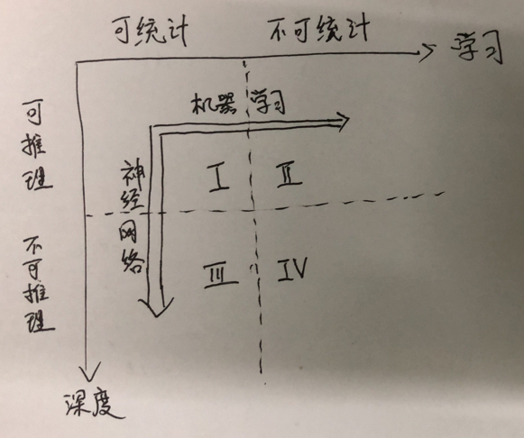

Infi-chu:
http://www.cnblogs.com/Infi-chu/
一、什么是学习
如果要给学习下一个定义，那么根据某百科给出的定义是——学习，是指通过阅读、听讲、思考和实践等途径获得知识或技能的过程。
那么对于计算机而言，什么是学习呢？怎样可以使得机器也学会了学习？对于计算机而言，如果能够通过某个过程，就改变了它的性能，那么这个过程就称之为学习。
在计算机领域而言，学习的核心目的就是为了改善性能。
二、什么是机器学习
对于计算机系统而言，通过数据以及某种特定的方法来提升机器系统的性能，就是机器学习。
对于一个学习问题，我们要抓住三个特征：
换种角度来定义的话，机器学习就是一个基于经验数据的函数估计问题。
虽说对于机器学习的定义颇多，但是相同之处在于，都强调了经验和数据的重要性，都认可机器学习提供了从数据中提取知识方法。
三、4象限
知识在2个维度上可以分为4类，即可以统计与不可统计2维度；可推理不可推理2维度，组合而成4类。
在横向坐标中，对于可推理的，可以通过机器学习的方法，最终完成推理；
在纵向坐标中，对于可统计的、但不可推理的，可以通过神经网络这种特定的机器学习方法，达到目的。
具体如下图所示：

四、什么是深度学习
首先要明确一个定律——麻烦守恒定律：麻烦不会减少，只会转移。
深度学习是一种包含多个隐含层的多层感知机。他通过组合低层特征，形成更为抽象的高层表示，用于描述被识别对象的高级属性类别和特征。
五、方法论
六、人工智能定位：
为了改善系统性能，需要在4大方面不断改进：
简单的来说，就是将人的智慧赋予机器，用“硅基大脑”模拟重现“碳基大脑”。
人工智能方向：
不管是深度学习还是机器学习，一般分为两个层面（两者相辅相成）：
【注】前者主要使用了“归纳”的方法，后者主要使用了“演绎”的方法。
判断机器学习的好坏，基于以下三点：
七、人工神经网络的特点